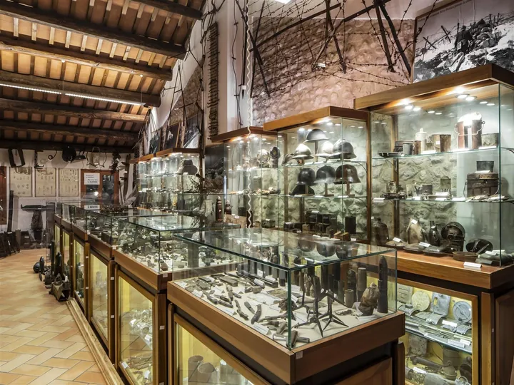

da dom 15 feb a dom 20 dic
Visita al Museo della Grande Guerra
Il Museo Storico della Grande Guerra 1915-1918 offre un percorso immersivo tra gli oggetti e le testimonianze della vita quotidiana al fronte.
 Indicazioni
Indicazioni
- Costi e prenotazioni
- Costo non indicato · Prenotazione non indicata
- Programma
- Programma da verificare. Apri la fonte ufficiale per orari e possibili aggiornamenti.
- In caso di maltempo
- Nessuna indicazione specifica pubblicata.
- Note
- Acquisito automaticamente dalla fonte.
L’EVENTO
Descrizione completa
Il Museo Storico della Grande Guerra 1915-1918 offre un percorso immersivo tra gli oggetti e le testimonianze della vita quotidiana al fronte.
La collezione, composta da un migliaio di reperti, racconta l’esperienza dei soldati durante il primo conflitto mondiale attraverso quattro sezioni tematiche: il rancio, l’ospedale da campo, il tempo libero e la trincea. Cuore della raccolta è la donazione del collezionista Bruno Xamin , che ha messo a disposizione del Comune una vasta gamma di materiali originali: utensili, equipaggiamenti, strumenti medici e oggetti di uso quotidiano, che restituiscono un quadro vivido della guerra vissuta dai combattenti.
Negli ultimi anni il Museo è stato arricchito da una nuova sala dedicata alle vicende – di recente scoperta – del dottor Andrea Marro, Maggiore Medico della Croce Rossa Italiana che durante il conflitto sul Grappa ideò un servizio chirurgico completo nella prima linea del fronte così da fornire un primo immediato soccorso al ferito e, una volta operato, lo avviasse al recupero nelle retrovie della pedemontana.
Ingresso libero.
IL PROGRAMMA
Programma e orari
Appuntamenti raccolti dalle fonti elencate. Dove manca un orario, non è ancora disponibile in questa scheda.
Programma pubblicato
- 2026-02-15 — 2026-02-15 · 15:30:00
- 2026-03-15 — 2026-03-15 · 15:30:00
- 2026-04-19 — 2026-04-19 · 15:30:00
- 2026-05-17 — 2026-05-17 · 15:30:00
- 2026-06-21 — 2026-06-21 · 15:30:00
- 2026-07-19 — 2026-07-19 · 15:30:00
- 2026-08-16 — 2026-08-16 · 15:30:00
- 2026-09-20 — 2026-09-20 · 15:30:00
- 2026-10-18 — 2026-10-18 · 15:30:00
- 2026-11-15 — 2026-11-15 · 15:30:00
- 2026-12-20 — 2026-12-20 · 15:30:00
INFORMAZIONI UTILI
Prima di partire
- Controllare la fonte prima di partire.
ORGANIZZAZIONE